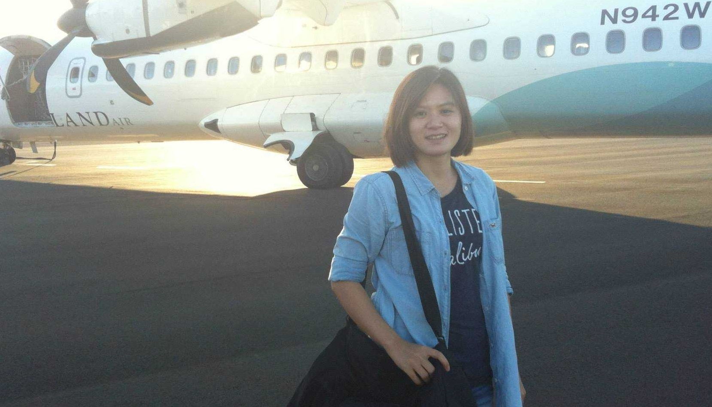
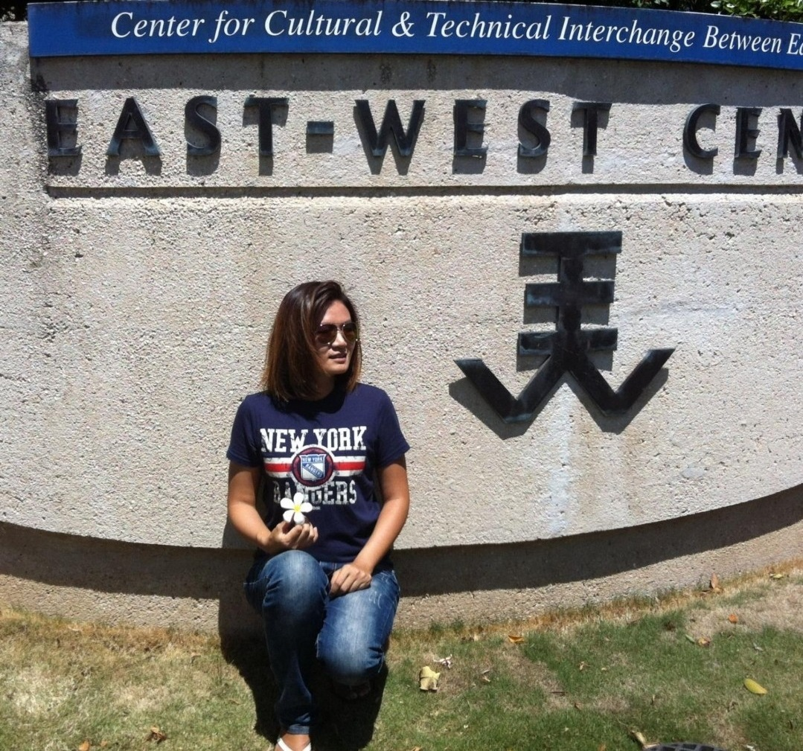

Chen-Yi Yang
I'm a teacher, sociolinguist, and a cross-field practitioner
➜ Audio-link Version 📢
關於 About
Assistant Professor & Sociolinguist
- Name: 楊真宜 Chen-Yi Yang
- Name (E): Karen Yang
- City: Taichung, Taiwan
- Pet: Black Shiba Inu 🐺🍖
- Degree: Ph. D.
- Office: K602A
- LinkedIn: karen0913
- Website: chen-yi-yang.github.io
經歷 Experiences
Current Position
國立勤益科技大學應用英語系 | 助理教授
2022 - Present
Assistant Professor, Department of Applied English, National Chin-Yi University of Technology, Taichung, Taiwan.
- 114年度教育部教學實踐研究計畫
-
- 中英筆譯與地方創生和社會實踐之整合課程【專案】大學社會責任(USR)
- 計畫編號：MOE-114-TPRSR-0043-010Y1
- 113年度教育部教學實踐研究計畫
-
- GIS故事地圖與中英翻譯課程之跨域應用【教育】
- 計畫編號：MOE-113-TPRED-0043-002Y1
- 114年度教育部「人文社會與產業實務創新鏈結計畫」第二期計畫
-
- 從教室到社區：中英翻譯與GIS故事地圖之跨域應用3.0
- 計畫編號：MOE-114-1-C-008
- 112年度教育部「人文社會與產業實務創新鏈結計畫」第一期計畫
-
- 從教室到社區：中英翻譯與GIS故事地圖之跨域應用2.0
- 計畫編號：MOE-112-1-C-005
- 112年度教育部「人文社會與產業實務創新鏈結計畫」第零期計畫
-
- 從教室到社區：中英翻譯與GIS故事地圖之跨域應用
- 計畫編號：MOE-112-C-022
- 產學合作計畫 - 計畫主持人
- 英語補習教育實務人才培育計畫
- 計畫1：台中市私立希伯崙股份有限公司 | Live ABC 互動美語北屯分公司
- 計畫2：台中市私立喬伊美語短期補習班 | 佳音太平分校
- 計畫3：台中市私立琳達文理短期補習班 | 夏恩英語
- 計畫4：台中市私立琳達文理短期補習班 | 芝麻街美語
- 計畫5：台中市私立獅子王文理短期補習班 | 新高穩瑩
- 計畫6：台中市私立獅子王文理短期補習班 | 獅子王1
- 計畫7：台中市私立獅子王文理短期補習班 | 獅子王2
Oversea
美國夏威夷大學語言學系 | 訪問學人
2013 - 2014
Visiting Scholar, Department of Linguistics, University of Hawaiꞌi at Mānoa.
- Teaching and learning an endangered language in Taiwan
- The Role and Current Situation of New Immigrants' Languages in Taiwan
- A Survey of Junior High Students' Language Proficiency, Use and Attitude in Taiwan: Mandarin Chinese, Indigenous Languages and English
Education
國立清華大學語言學研究所博士
Ph.D., Linguistics
National Tsing Hua University, Hsinchu City, Taiwan.
- [Dissertation] A Study of Taiwan Junior High Students' Language Proficiency, Use, and Attitude: Mandarin Chinese, Indigenous Languages, and English.
靜宜大學英國語文學系碩士
MA, English Language, Literature and Linguistics
Providence University, Taichung City, Taiwan.
- [Thesis] Sociolinguistic Variation of Mandarin Chinese /f/ and /hw/ in Taiwan.
Academic Awards
國立勤益科技大學推動研究發展績效獎
Promoting Research and Development Performance Award, NCUT.
- 113年度績效卓越獎 (2024)
- 112年度核心證照獎 (2023)
國科會獎勵博士候選人撰寫博士論文獎
Doctoral Dissertation Fellowships for the Humanities and Social Sciences
- 國科會 104-2420-H-007-008-DR (2015)
國科會補助博士生赴國外研究「千里馬計畫」
Scholarship of the Graduate Students Study Abroad Program
- 國科會 102-2917-I-007-026 (2012)
語言學研究生獎學金
Scholarship of the Linguistic Graduate Students, The Language Training & Testing Center
- LTTC 財團法人語言訓練測驗中心 (2011)
年度最佳論文獎
Award of Annual MA thesis
- Award of Annual MA thesis, Providence University (2008)
國際榮譽大使
International Honor Ambassador
- Office of International Affairs, Providence University (2008)
Licenses & Certificates
Teaching Knowledge Test 劍橋英語教師認證
TKT Module 2 | Band 2 Cambridge English
- 證書編號：C1295176
AIL 人工智慧專業級證照
Artificial Intelligence Literacy Certification Programs | Expert
- 證書編號：24-A-AIL-00-ES-886000701
AIL 人工智慧基礎級證照
Artificial Intelligence Literacy Certification Programs | Fundamentals
- 證書編號：22-A-AIL-00-FD-886001216
新型研發專利
新型名稱：外語口說評分系統
- 專利編號：新型第 M657972 號
- 專利權期間：2024.07.11 - 2033.12.05
學術教學職級證書(助理教授)
- 教師證號：助理字第 154069 號
高級中等學校英文科教師證書
- 教師證號：中字檢第 9800102 號
教育部閩南語語言能力認證(中高級)
- 證書編號：臺語字第 1000211385 號
成就 Achievements
研究計畫
過往主持並參與多項重要計畫，例如主持教育部人文社會與產業實務創新鏈結計畫、參與科技部人文創新與社會實踐、台灣閩南語的歷時演變研究、以及瀕危雅美語的保存與數位化建構等計畫，展現其在語言學與社會實踐領域的深厚造詣。[開啟👆]
產學合作
積極推動產學合作，主持多項英語補習教育實務人才培育計畫，並與台中市多家英語補習機構合作，包括 Live ABC 互動美語北屯分公司、佳音太平分校、夏恩英語、芝麻街美語、新高穩瑩、獅子王等機構，致力於培育英語教育實務人才，提升英語教學品質。[開啟👆]
學術發表
學術發表涵蓋台灣新南向政策與東南亞語言人才培育、新住民子女語言現況與角色等主題。並在多場國際研討會上分享關於台灣原住民語言流失與復興、客家年輕世代語言活力與傳承等研究成果，為語言學與文化研究領域做出重要貢獻。[開啟👆]
學術參與
除學術發表外，學術參與涵蓋擔任論文審稿/口試委員、研討會主持人/評論人、期刊審查委員、客座講師與活動主辦人等角色，並投入各項研習課程。這些經驗強化其專業領域相關知識，也為後進學者提供了指導與建議，進一步推動學術社群的發展。[開啟👆]
專題指導
協助帶領學生們的畢業專題論文，例如台灣大學生台語學習與文化認同、應用英語系學生英語口說焦慮潛在成因探討、台灣新二代的語言保留與習得等主題。展現了在語言學習、文化認同與多元文化教育方面的專業指導能力。[開啟👆]
工作經歷
曾經於各大學擔任教職與研究員職位，包括國立清華大學、中山大學、彰化師範大學、高雄科技大學等。職責涵蓋科學教育計畫之規劃、智慧城鄉創生研究、英語教學，以及社區記憶與創新轉型等領域，展現其在教育與研究上的多元專業。[開啟👆]
展示 Showcase
專業領域與個人生活中的多元成果，從創新應用競賽獲獎、專業證照與證書、專利與獎項、到生活點滴，每張照片與描述都記錄了其成果與累積。透過這些分享，得以一探究竟Karen在學術與實務並進的旅程、以及對於教育與研究的熱情。
[圖片上方 🖱️點選 放大封面 / 🖱️點選 瀏覽內容]
{kind=link}
{kind=link}
{kind=link}
{kind=link}
{kind=link}
{kind=link}
聯絡 Contact

Address
No.57, Sec. 2, Zhongshan Rd., Taiping Dist., Taichung 411030, Taiwan.
Phone
04-23924505 #8633
chenyi@ncut.edu.tw